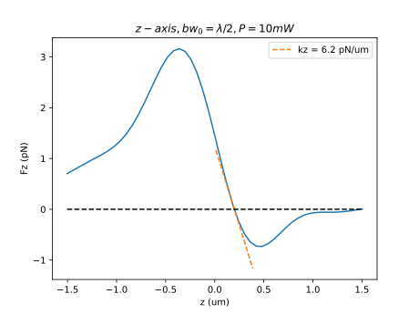
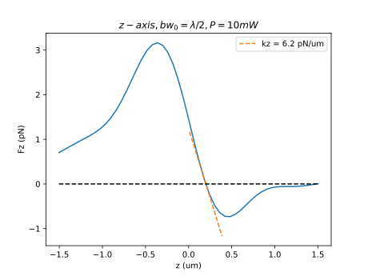

Electromagentic Forces on a Polystyrene Sphere Induced by a Gaussian Beam
This example aims to illustrate how to calculate optical forces, as well as how to calculate the field of a Gaussian beam and its derivatives. Note that the derivatives are implemented as dimensionless. Thus, both the field and the derivatives would have the same units.
The forces will be calculated along the three axes, x-, y- and z-axis. We consider a Gaussian beam focused at the origin of coordinates. The force is calculated as a function of the position of the PS particle center relative to the focal point of the beam. In order to avoid the re-inversion of the DDA matrix, the particle is fixed at the center of coordinates, while the focal point of the Gaussian Beam is moving.
If you want to run this example, copy it or download it on the github (example_force_gaussbeam_PS_sphere.jl) and run it using
julia example_force_gaussbeam_PS_spher.jl
It is recommended to run the code in parallel, using the --threads option.
Let us start by importing CoupledElectricMagneticDipoles.jl. Note that we also use LaTeXStrings and PyCall, because we will use the python matplotlib library in order to plot the results.
#imports
using CoupledElectricMagneticDipoles
using PyCall
using LaTeXStrings
@pyimport matplotlib.pyplot as plt
Discretizing the Sphere and polarizability
We need to start modeling our particle in water. The parameters are the same as for example_PS_sphere.jl. Thus, please visit this example for more details.
##################### Parameters ########################################
#radius of the sphere (in this example, we work in microns)
a=0.25
#dielectric constant of the particle
eps=(1.59)^2
#dielectric constant of the medium
eps_h=(1.33)^2
##########################################################################
#discretizes a sphere in small cubes
latt,dx=Geometries.discretize_sphere(a,10)
n=length(latt[:,1])
# wavelength in the host medium (1 micron in vacuum)
lamb = 1/sqrt(eps_h)
# wavevector
knorm=2*pi/lamb
# normalized position of the dipoles
kr = knorm*latt[:,1:3]
#computes polarizability for each dipoles using effective dielectric constant
alpha=zeros(ComplexF64,n,3,3)
for j=1:n
eps_eff=latt[j,4]*eps+(1-latt[j,4])*eps_h
alpha[j,:,:]=Alphas.alpha_radiative(Alphas.alpha0_parallelepiped(dx,dx,dx,eps_eff,eps_h),knorm)
end
# calculation of the inverse DDA matrix
Ainv = DDACore.solve_DDA_e(kr,alpha)Notice that in this example DDACore.solve_DDA_e has no input_field argument. Then, the output is the inverse DDA matrix.
Setting incoming field and particle position
As an incoming field, we will use a Gaussian Beam with beam waist radius $bw_0 = \lambda/2$, that in adimensional units is $knorm*bw_0 = pi$. Also, the forces will be calculated along the three axes, between [-2\lambda, 2\lambda], discretizing the space in 51 points. For convenience, it is better to use an odd number of points in order to take the 0.
# parameters of the Gaussian Beam
# beam waist radius is set to lamb/2
kbw0 = pi # (2*pi/lambda)*(lamb/2)
# discretization of the position of the particle
ndis = 51 # odd number in order to mesh the "0" position
dis = LinRange(-2*lamb,2*lamb,ndis)
# variable where the force will be stored
force = zeros(ndis,3)Calculating the forces
Finally, we can loop on positions and compute the forces as follows:
# loop on positions
# note that, instead of moving the particle (and avoiding to recalculate the inverse DDA matrix), the position of the focus
# of the Gaussian beam is changed.
for i=1:ndis
# forces along the x-axis
# evaluation of the Gaussian beam and its derivatives
krf = (latt[:,1:3] .+ [dis[i] 0 0])*knorm
e_0inc = InputFields.gaussian_beam_e(krf,kbw0)
dxe_0inc, dye_0inc, dze_0inc = InputFields.d_gaussian_beam_e(krf,kbw0)
# calculation of forces
fx, fy, fz = Forces.force_e(kr,alpha, Ainv, e_0inc, dxe_0inc, dye_0inc, dze_0inc)
global force[i,1] = sum(fx)
# forces along the y-axis
# evaluation of the Gaussian beam and its derivatives
krf = (latt[:,1:3] .+ [0 dis[i] 0])*knorm
e_0inc = InputFields.gaussian_beam_e(krf,kbw0)
dxe_0inc, dye_0inc, dze_0inc = InputFields.d_gaussian_beam_e(krf,kbw0)
# calculation of forces
fx, fy, fz = Forces.force_e(kr,alpha, Ainv, e_0inc, dxe_0inc, dye_0inc, dze_0inc)
global force[i,2] = sum(fy)
# forces along the z-axis
# evaluation of the Gaussian beam and its derivatives
krf = (latt[:,1:3] .+ [0 0 dis[i]])*knorm
e_0inc = InputFields.gaussian_beam_e(krf,kbw0)
dxe_0inc, dye_0inc, dze_0inc = InputFields.d_gaussian_beam_e(krf,kbw0)
# calculation of forces
fx, fy, fz = Forces.force_e(kr,alpha, Ainv, e_0inc, dxe_0inc, dye_0inc, dze_0inc)
global force[i,3] = sum(fz)
endExpressing Forces in Newtons
The output of the function for the forces has the same unit as the square of the input field. In order to express the forces in Newtons it is necessary to multiply by a factor $\epsilon_0\epsilon_h 4 \pi /k^2$ (a factor $4 \pi /k^3$ that accounts for the adimensionality of the polarizability and a factor $k$ since the spatial derivatives of the Green function and of the external field are adimensional), where the field, $\epsilon_0$ and $k$ must be in SI units. Also, in the calculation of the Gaussian beam field we have set $E_0 = 1$ (value by default), and the force must be scaled according to the intensity of the beam. Thus, assuming that our laser source has a power of $P = 10 mW$, we can proceed as follows.
First, for simplicity, we consider that the intensity distribution at the focus also follows a Gaussian distribution,
\[I(x,y,z=0) = I_0 e^{-2\frac{x^2 + y^2}{bw_0^2}}, \]
with
\[I_0 = \dfrac{1}{2}c \epsilon_0\epsilon_h |E_0|^2, \]
being $c$ the speed of light in the medium. Under this approximation (not totally accurate since the beam is tight focused), the power of the beam can be calculated as the surface integral of the intensity at the focal plane
\[P = I_0 \int_{z=0} e^{-2\frac{x^2 + y^2}{bw^2}} = I_0 \pi \dfrac{bw_0^2}{2}.\]
Thus, to convert the forces units into Newtons, the calculated forces must be multiplied by
\[\epsilon_0\epsilon_h 4 \pi /k^2 |E_0|^2 = \dfrac{16 P}{c (kwb_0)^2}.\]
For the Gaussian beams implemented in the library (gaussian, hermite and legendre beams), there is a function in the Force module called Forces.force_factor_gaussianbeams that calculates this proportionality factor. Hence, we can use it as follows:
# converts forces in Newtons
# laser power (10 mW)
power = 10e-3
factor = Forces.force_factor_gaussianbeams(kbw0,power,eps_h)
# force in Newtons
force = force*factorCalculating Stiffness
Since the Gaussian beam is going to trap the particle, the forces around the equilibrium position can be approximated by a linear model. The depth of the trap can be characterized by the stiffness along the different axes, i.e. a simple spring model. Hence, to estimate the stiffness, a linear fit can be done.
# calculation of the stiffness of the trap by a linear fit around the zero force position
# for kx and ky, we directly assume that the zero force position is at the minimum of the "dis" array (at dis = 0)
# find the position of the minimum
val, ind_min_xy = findmin(abs.(dis))
# calculation of the stiffness along the x- and y-axis
kx = -(force[ind_min_xy+1,1]-force[ind_min_xy-1,1])/(dis[ind_min_xy+1] - dis[ind_min_xy-1])
ky = -(force[ind_min_xy+1,2]-force[ind_min_xy-1,2])/(dis[ind_min_xy+1] - dis[ind_min_xy-1])
# for kz the minimum is found as the first minimum along the z-axis (the minimum is not at "z=0")
ind_min_z = ind_min_xy
while abs(force[ind_min_z,3]) > abs(force[ind_min_z+1,3])
min_z = ind_min_z + 1
global ind_min_z = min_z
end
# calculation of the stiffness along the z-axis
kz = -(force[ind_min_z+1,3]-force[ind_min_z-1,3])/(dis[ind_min_z+1] - dis[ind_min_z-1])
# linear calculation of for the position of the minimum
zmin = dis[ind_min_z] + force[ind_min_z,3]/kz
# shorter array for plotting the linear approximation of the forces
dis_short = LinRange(-lamb/4,lamb/4,ndis)
# linear approximation of the force around the zero
fx_lin = -kx*dis_short
fy_lin = -ky*dis_short
fz_lin = -kz*(dis_short)
# rounding the value of the stiffness for the legend
kx = round(kx*1e6,sigdigits=3)
ky = round(ky*1e6,sigdigits=3)
kz = round(kz*1e6,sigdigits=3)Plotting Forces
Once the forces and the stiffness are calculated, they can be plotted using the following lines:
# plotting results
fig, axs = plt.subplots()
axs.set_title(L"x-axis, bw_0 = \lambda/2, P = 10 mW")
axs.plot(dis,force[:,1]*1e12,label="")
axs.plot(dis_short,fx_lin*1e12,"--",label="kx = "*string(kx)*" pN/um")
axs.set_xlabel("x (um)")
axs.set_ylabel("Fx (pN)")
axs.legend()
fig.savefig("fx.svg")
fig, axs = plt.subplots()
axs.set_title(L"y-axis,bw_0 = \lambda/2, P = 10 mW")
axs.plot(dis,force[:,2]*1e12)
axs.plot(dis_short,fy_lin*1e12,"--",label="ky = "*string(ky)*" pN/um")
axs.set_xlabel("y (um)")
axs.set_ylabel("Fy (pN)")
axs.legend()
fig.savefig("fy.svg")
fig, axs = plt.subplots()
axs.set_title(L"z-axis, bw_0 = \lambda/2, P = 10 mW")
axs.plot(dis,force[:,3]*1e12)
axs.plot((dis_short .+ zmin),fz_lin*1e12,"--",label="kz = "*string(kz)*" pN/um")
axs.plot(dis,force[:,3]*0,"k--")
axs.set_xlabel("z (um)")
axs.set_ylabel("Fz (pN)")
axs.legend()
fig.savefig("fz.svg")
 
Here, x,y and z in the horizontal axis are the positions of the PS particle relative to the focal point of the beam.